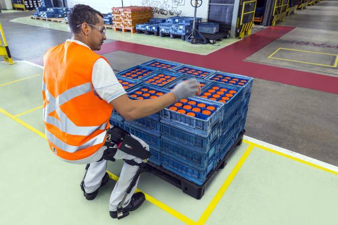

Экзоскелет для рабочих - меньше усталость, выше производительность
Спина, плечи и колени часто являются наиболее уязвимыми частями тела у любого строителя или отделочника. Вот почему suitX, калифорнийская робототехническая компания, разработала модульный экзоскелет (Modular Agile eXoskeleton или MAX). Используя три отдельных модуля, legX (ноги), backX (спина) и shoulderX (плечи), пользователи могут ориентироваться на одну конкретную область или комбинировать все три модуля в костюме-экзоскелете для всего тела.
Проще говоря, система MAX уменьшает давление на спину, ноги и плечи через распределение нагрузки, без необходимости в батареях, приводах или компьютере. Каждый модуль также предназначен для обеспечения нормального диапазона движения и совместимости с другим оборудованием безопасности, таким как, например, ремни.
По данным компании, backX снижает компрессию спинного мозга в среднем на 60%. Он поставляется в двух разных моделях: одна весит 4,5 фунта, другая - 7,1 фунта, что удивительно легко, учитывая все преимущества, которые, по утверждению фирмы, имеются. Компания также заявляет, что требуется всего около 30 секунд, чтобы выключить модуль и включить его. Стоимость составляет 3000 долларов.
LegX немного тяжелее, масса 9,1 фунта, но компания утверждает, что "вес устройства не несет пользователь". Работник сможет извлечь выгоду из снижения усталости колена, что позволит ему приседать на длительные периоды времени. Механизм блокировки на модуле позволяет использовать его как стул. LegX является самым дорогим из трех модулей и стоит 5000 долларов.

ShoulderX идеально подходит для рабочих, которые выполняют большую работу руками, например, на уровне потолка. Поддержка устройства при поднятии руки позволяет человеку выполнять задачи с гораздо меньшей усталостью. Если используется только плечо, нагрузка распределяется по бедрам пользователя, но при использовании в сочетании с legX груз переносится на землю или пол. Стоимость модуля плеча составляет 3000 долларов.
Осталось дождаться выпуска рабочих-роботов.